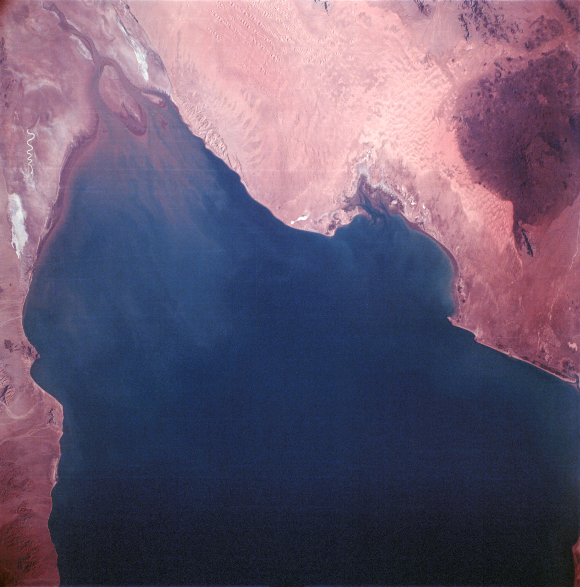

Apollo's lunar missions were not launched from Cape Kennedy. Launch Complex 39, where Saturn Vs were launched, was on Kennedy Space Center grounds. (Launch Complexes 34 and 37 were on the Air Force Eastern Test Range, on the Cape itself.) Of the three launch areas planned for Complex 39 and shown in the 1965 drawing (the three right-hand areas above), the one at the extreme right, Area C, was not constructed; Areas (or Pads) A and B were built and used for all Saturn V launches.
The success of Apollo 4 gave good reason to believe that the Saturn V could be trusted to propel men into space. But NASA pushed on with its plans for a second unmanned booster flight, primarily to give the Pad 39 launch team another rehearsal before sending men into deep space on the Saturn V.
Getting Apollo 6 to the launch pad was a lengthy process. The S-IC first stage of the Saturn V arrived at Kennedy Space Center* on 13 March 1967. Four days later it was on a mobile launcher in the cavernous assembly building, awaiting the S-II second stage - which did not get to Kennedy until May. On 6 February 1968, a Tuesday morning, a crawler carrying the whole Apollo stack on its platform edged out of the building into a wind-driven rain and headed slowly down a track to the launch complex, five kilometers away. En route, trouble with communications circuits forced a two-hour wait. When communications were restored, the crawler resumed its snail's pace. At 5:00 that afternoon, the rain stopped, and the Apollo stack arrived at the launch area an hour later.33
Although the spacecraft itself had no primary objectives to accomplish, a Block I version (CSM-020) with many Block II improvements (such as the new hatch) was allocated to the mission. Kleinknecht, the command and service modules manager in Houston, was pleased with the machine that North American sent to Kennedy, although he was upset when he learned that the protective Mylar film that covered the spacecraft during shipment was flammable. In engineering terms, it was a clean spacecraft. Only 23 engineering orders were outstanding (as opposed to the hundreds listed for spacecraft 012 only a year and a half earlier), and most of these were the kind that the spacecraft operations people at Kennedy normally handled anyway.34 The spacecraft had no last-minute problems, but the mission planners did.
In November 1967, the idea of putting a camera in the window of the spacecraft to take some earth resources photographs had been explored in a review for Mueller at North American. John Mayer's MSC mission planners were hit hard by the late inclusion of the camera. Because Apollo 6 was unmanned, all the flight trajectory data had to be correlated with the photographic aims and a computer program had to be developed and fed into the onboard computer. After many careful checks, the mission planners decided that there might be a chance during the first orbit and part of the second to get some pictures of the area from Baja California to Texas.35
Apollo 6 had been scheduled for the first quarter of 1968, but several brief postponements slipped it past that date. On 15 January, Mueller wrote Webb that the tank skirt of service module 008 had split during structural testing. The skirt on spacecraft 020 was strengthened to prevent a similar mishap. Then, after the stack had been trundled down the path to the launch area on a rainy day, water seepage was found in the Saturn's S-II stage, and some parts had to be replaced. And, finally, the countdown-to-launch practice did not end until 29 March.36
At 7:00 a.m. on 4 April 1968, Saturn V 502 rose thunderously from its Florida launch pad to boost Apollo 6 (AS-502) into orbit, but that was nearly the last normal thing the big rocket did. For the first two minutes, the five huge engines in the first stage roared, shook the ground, and belched fire evenly. Then there were thrust fluctuations that caused the vehicle to bounce like a giant pogo stick for about 30 seconds. Low-frequency modulations (known as the pogo effect) as high as +/-0.6 g were recorded in the command module, which exceeded design criteria (0.25 g was the upper limit permitted for manned flight in Gemini). Except for the bouncing and the loss of a piece of the panel in the adapter, the first stage did its job, however.
Very shortly after the second stage ignited, two of its five J-2 engines stopped. The other three engines had to fire longer to compensate for this loss of power. The second stage did not reach the desired altitude and velocity before its fuel gave out and it dropped away. To reach the required speed, the S-IVB third stage also had to burn longer than planned, putting the spacecraft into an orbit of 178 by 367 kilometers, instead of a 160-kilometer circular orbit.
Mission Director Schneider and Flight Director Clifford E. Charlesworth left the vehicles in a parking orbit for two circuits of the earth while system checks were performed, operational tests were conducted, and several attitude maneuvers were carried out. Then flight control tried to restart the S-IVB, to simulate translunar injection, but the third stage refused to answer the call. The next step was to separate the command and service modules from the now useless S-IVB.
While Apollo 6 had been whirling around the earth, the spacecraft's special 70-millimeter camera had been clicking away, getting some spectacular color stereo photographs.** These were later found to be excellent for cartographic, topographic, and geographic studies of continental areas, coastal regions, and shallow waters.

Mouth of the Colorado River and Gulf of California were photographed from the Apollo 6 spacecraft 220 kilometers above on 4 April 1968. Baja California is at the left, and the Mexican state of Sonora, showing the Sonoran Desert, is to the right of the river's mouth.
Following the system checks and the photography, controllers turned to an alternate mission. The service module engine was fired for 442 seconds,*** which exceeded lunar mission requirements, to produce the simulated translunar injection maneuver. Apollo 6 shot out to 22,200 kilometers. Although the spacecraft had enough altitude for a good simulation of an Apollo spacecraft returning to the earth from the moon, the service module engine no longer had sufficient fuel to give it the correct speed for its dive. The command module reached a velocity of 10,000 meters per second, about 1,270 less than planned, and splashed down in the Pacific, missing its predicted impact point by 80 kilometers. The spacecraft was hauled aboard the U.S.S. Okinawa to complete its 10-hour mission.37
On 9 April 1968, a NASA news release declared that preliminary data on Apollo 6 indicated that the spacecraft had done its job well. Mueller and Phillips, however, concluded that the overall flight had not been a success.
Apollo was not top international or even national news in April 1968, even though this flight was a major step in the program to land men on the moon. President Johnson had announced 31 March that he did not intend to seek reelection, hoping that this action would expedite the ending of the war in Southeast Asia. And on 4 April, the day of the flight, Martin Luther King, Jr., a civil rights leader of international stature, was assassinated in Memphis, Tennessee. About the only explaining that NASA had to do, therefore, was to the congressional committees on space activities, who seemed satisfied with what they heard.38
But the Apollo team did not need a round of public criticism in April 1968. With the decade nearing its end, pressures were already exceedingly heavy. In the alphabet game of reaching the "G" (or lunar landing) mission, NASA had flown only two "A" missions (Saturn V unmanned) and one "B" (Saturn IB with an unmanned lunar module). Now Huntsville had to find out why the Saturn V's S-IC first stage bounced, why the S-II second stage turned off two of its engines, and why the S-IVB third stage refused to fire a second time. Meanwhile, Houston had to determine exactly how much shaking the lander could stand and why a large piece of the spacecraft-lunar module adapter had blown out during launch. Without satisfactory answers, the Saturn V might have to make a third unmanned flight.
* During Apollo 6 activities, a small intercenter irritation surfaced. Although almost everyone referred to the whole Florida launch layout as "the Cape," Albert Siepert, Deputy Director for Kennedy Space Center Management, wrote Wesley Hjornevik in Houston to point out that Launch Complex 39 was situated entirely within the geographical boundaries of the entity known as the "Kennedy Space Center, NASA." Noting that the widespread use of "the Cape" was a nostalgic hearkening back to Mercury and Cape Canaveral, Siepert nevertheless maintained that "NASA report writers ought not to confuse geographic proximity to the Cape as the same thing as being on it." However that may have been, the terminology "launched from the Cape . . ." continued to be used by the news media - and the present authors.
** The camera photographed sections of the United States, the Atlantic Ocean, Africa, and the western Pacific Ocean. This camera had a haze-penetrating film and filter combination that provided better color balance and higher resolution than any photographs obtained during the Mercury and Gemini flights.
*** If the S-IVB had made its second burn, the service module engine would have fired for only 280 seconds.
33. NASA, "Project: Apollo 6," press kit, news release 68-54K, 21 March 1968, p. 7; MSC, "Discussion of Information Regarding Apollo Launch Date," Announcement 68-43, 18 March 1968; Mueller to Gilruth, 9 Jan. 1968; Benson and Faherty, Moonport, p. 437; Quarterly Status Rept. no. 23, p. 50; Albert F. Seipert to Wesley L. Hjornevik, 19 April 1968.
34. Phillips to Admin., NASA, "Apollo 6 Mission (AS-502)," 20 March 1968, with enc., pp. 40-41; Phillips TWX to MSC, MSFC, and KSC, Attn.: Low, Rudolph, and Middleton, 15 Nov. 1967; Phillips to MSFC et al., "Apollo 6 and AS-503 Unmanned CSM Assignments," 12 Dec. 1967; Walter S. Fellows letter, "AS-503/BP-30 Mission Directive," 2 Feb. 1968; Kleinknecht to Myers, 13 Feb. 1968; Kleinknecht to Mgr., ASPO, "Information on new work and normal flow work planned for CSM 020 at KSC," 17 Nov. 1967; Kleinknecht to Mgr., ASPO, "Notes and comments," 17 Nov. 1967; Low to George H. Hage, 18 Nov. 1967.
35. Kleinknecht to Mgr., ASPO, "Notes and comments," 17 Nov. 1967; B. E. Sabels, "Earth Resources Aircraft Program Test Site Coverage by Expected AS-502 Color Photography - Case 630,"Bellcomm working paper, 29 Jan. 1968; Richard G. Terwiliger, summary of meeting to discuss Apollo 502 mission's earth-oriented photography, 29 Jan. 1968; John R. Brinkmann, recorder, minutes of February meeting of the Camera Development Review Board, 7 Feb. 1968.
36. MSC news release 68-10, 20 Feb. 1968; MSC, anon., "Apollo Spacecraft Progress," [ca. February 1968]; Mueller Reports, 15 and 29 Jan., 5 and 12 Feb., and 25 March 1968.
37. MSC, "Apollo 6 Mission Report," MSC-PA-R-68-9, June 1968, pp. 1-1, 1-2, 2-1, 2-2, 10-1; JSC, "Apollo Program Summary Report," JSC-09423, April 1975, p-p. 2-26, 2-27; Phillips to Admin., NASA, "Apollo 6 Mission (AS-502) Post Launch Report #1," 18 April 1968, with enc.; Quarterly Status Rept. no. 24, 30 June 1968, pp. 3-5; Mueller Report, 8 April 1968; Kraft memo, "Flight Control Planning for Apollo 6," 21 Feb. 1968, with enc.; Jerome B. Hammack to Dir., Flight Ops., "Apollo 6 preliminary recovery information," 5 April 1968; Mueller for Admin., NASA, "Apollo 6 Mission Assessment," 15 April 1968; Sabels, "Apollo 502 Color Photography of Earth Resources - Case 710," abstract of Bellcomm rept., 6 May 1968; Sabels, "Preliminary Evaluation of AS-502 Color Photography of Earth Resources, Case 340," abstract of Bellcomm rept., 19 July 1968; John L. Kaltenbach, comp., "Science Report on the 70-Millimeter Photography of the Apollo 6 Mission," NASA S-217, review copy, May 1969, p. ii, iii, 1-5.
38. MSC news release 68-30, 9 April 1968; Phillips to Admin., NASA, "Apollo 6 Mission (AS-502) Post Launch Report #2," 27 Dec. 1968, with enc., "NASA Mission Objectives for Apollo 6," signed by Phillips 13 Dec. and by Mueller 27 Dec. 1968; Benson and Faherty, Moonport, pp. 440-43; Senate Committee on Aeronautical and Space Sciences, NASA Authorization for Fiscal Year 1969: Report on H.R. 15856, 90th Cong., 2nd sess., 20 May 1968, pp. 4-14.